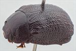
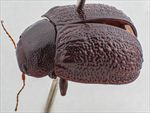
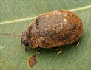
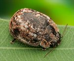
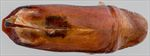
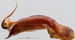
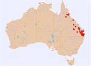

Click on images to enlarge
{kind=link}

Male, Lowood, S.E. Queensland
![Male, Mt. Moffat N.P., central Queensland [QM]](assets/image/Ta38/Ta38_AGM-108_SM.jpg){kind=link}

Male, Mt. Moffat N.P., central Queensland [QM]
{kind=link}

Female, Helidon, S.E. Queensland
{kind=link}

Female, Tinaroo, North Queensland
{kind=link}

Aedeagus, dorsal view (Lowood, S.E. Queensland)
{kind=link}

Aedeagus, lateral view (Lowood, S.E. Queensland)
{kind=link}

Distribution
Name
Trachymela litigiosa (Chapuis)
Reference specimen
1999-0471, Lowood, SE Queensland.
Adult Description
Length: ♂ 8.1–9.4 mm (n=13), ♀ 8.4–9.9 mm (n=48).
Colouration:
- Head: uniformly very dark brown with black-tipped mandibles, sometimes with fractionally darker regions especially on clypeus, labrum may be darker or lighter in shade; antennomeres 1–4 mid- to dark brown, 5–11 fractionally to considerably darker, generally grading towards a darker shade (even black) distally.
- Pronotum: uniformly very dark brown, concolorous with or fractionally darker than head.
- Scutellum: black.
- Elytra: very dark brown, concolorous with pronotum, sometimes with small streaks or spots of a fractionally lighter shade that coincide with elevated interstices or verrucae, humeral callus is concolorous with surrounding region.
- Venter & Legs: head and thoracic and abdominal ventrites black, legs black, inside surface of elytral epipleura black.
- Cuticular Wax: light- to mid-brown in colour, quite evenly and usually densely distributed, streaks of gray cuticular wax are always present with a relatively thin band along lateral margins of pronotum and elytra and a broader one in an arc from humeral callus to just behind elytral summit.
Morphology:
- Head: moderate-sized, body noticeably flattened, greatest height viewed laterally behind middle of elytral margin; punctures relatively large (pd ≈ 1.5–2× ef) and evenly and quite densely distributed; antennae moderately long (AL/BL: ♂ 37–43%, ♀ 35–39%), filiform.
- Pronotum: almost evenly curved transversely with only a suggestion of a small explanation at extreme lateral margins, a very shallow depression sometimes present behind the outside edge of each eye usually with a broad elevated area in its middle which may completely obliterate it, punctures clearly impressed, quite evenly distributed and moderately dense in discal area, becoming much coarser towards lateral margins; much finer punctures are scattered very unevenly among the larger ones; front margins join lateral margins in a smoothly rounded right-angle, with lateral margin usually straight for a short length then curving smoothly and gradually towards rear margin.
- Scutellum: variable, smooth and unpunctured or surface somewhat rough with a scatter of light punctures smaller than those on adjacent area on pronotum.
- Elytra: surface very lightly curved in anterior half, curvature becoming much greater in posterior half, punctures distinct anteriorly and in the area around elytral summit, becoming much less so in posterior third, and relatively evenly distributed, interstices quite convex except for the area around elytral summit, giving elytra a rough appearance, some very inconspicuous verrucae are present in posterior third of disc, some slightly elongated, surface slightly discontinuous under humeral callus, lateral margins noticeably sinuous; vertical extension of epipleura small (HCE/PW = 0.27–0.30).
- Venter: prosternal process almost parallel-sided and broad, closed anteriorly, setae almost absent from prosternal process and from mesoventrite, one long seta on anterior, median and posterior trochanter; front edge of metaventrite beveled, truncate, inner edge of epipleura setose posteriorly, as far forward as anterior edge of 5th abdominal segment, rarely much further.
Male Genitalia (Aedeagus):
- Dimensions: long (LPE/BL = 36–42%).
- Dorsal view: shaft almost parallel-sided or converging almost imperceptibly for much of length, then broadening fractionally at ostium before the sides converge towards apex in a smooth arc, dorsal surface smoothly curved with faint dorso-median channel usually present, dorso-lateral channels well developed, spatula broad and well-developed terminating in a broad, flat apex, ostium large and approximately round.
- Lateral view: shaft quite thick, a curve near junction of basal and central section then almost straight for whole of central section before the apical 15% curves prominently downwards again, thinning towards apex over 40% of length, tip strongly deflexed, flagellum thick at exit from ostium and tightly curving through about 180° before quickly tapering down in thickness.
Immature Stages
- Eggs: This species is ovoviviparous.
- 1st Instar Larvae: (from field notes): overnight (after capture of adult) two larvae had appeared in collecting tube with adult. One of these was still partially surrounded by a thin, transparent membrane from which it was struggling to get free. The larvae are brown, long-bodied and thin, long-legged and quite active. The whole body of the larva is covered in short setae. Larvae fed readily on foliage of bloodwood (prob. C. intermedia).
Similar species
- Ta238: This less commonly found species has so far been recorded only from south-east Queensland. It tends to be slightly smaller and with a surface texture that is smoother and more nitid. A more extensive discussion of the differences between it and Ta38 can be found in its species note.
- Ta14: This species is very similar in appearance but is consistently smaller. One other difference is in the form of the verrucae in the hind part of the elytra, which are more discrete and evenly spaced in Ta14. Both show the wide prosternal process that characterizes T. squirescensis in Blackburn’s key. The aedeagi, however, are of an entirely different form.
Notes
- Taxonomy: The identification of this species as Trachymela litigiosa (Chapuis) is by comparison with photos of the type specimen. However, this identification remains somewhat tentative. This is a species of Trachymela in the solivagus-group of species that have radiated extensively mainly on Corymbia and Blakella in northern Australia. The large majority of them have a very similar habitus, a similar pattern of cuticular wax distribution ("circum-summit") and narrow epipleurae, thus making them mostly easy to identify as a group but difficult to separate to species from external morphology.
- Distribution & Abundance:
- Host Associations: Almost all specimens of Ta38 have been caught off species of bloodwood (Corymbia) or ghost gums (Blakella), the majority from B. tessellaris (n=18), with smaller numbers from B. maculata/henryi (n=6), C. intermedia (n=7), C. trachyphloia (n=2), C. erythrophloia (n=3), C. clarksoniana (n=1) and unidentified Corymbia s.l. (n=10). It is also infrequently found on Angophora sp. (n=2).
- Morphological Variation: A specimen from Central Queensland (Mt. Moffat N.P., QM) is somewhat different to typical specimens. The verrucae on the elytra are better defined and more clearly in series, with particularly VR3 and VR5 quite prominent. The aedeagus is noticeably narrower than is typical for Ta38, and the pattern of antennomere lengths differs from typical Ta38. Another male from Central Queensland (Crediton S.F., near Eungella, QM) has an aedeagus that is about 10% longer than that of typical specimens of equivalent size. The elytral marginal area is narrower than typical in this species, and the line of epipleural setae does not extend as far forward, but in other characters it is essentially indistinguishable from other specimens of Ta38.
- Population Structure: The sex ratio is very strongly female-biased, with 79% of 62 specimens examined being female. At least some of this skew is almost certainly due to females of Ta238 (and possibly Ta60) being incorrectly assigned to this species. All specimens from northern Queensland that are currently assigned to Ta38 are females (the most northerly male is from Bluff, west of Rockhampton). They are somewhat variable in size and roughness of dorsal surface but are for the most part indistinguishable from typical Ta38 from southern locations, including in the possession of setose epipleura.
Copyright © 2026. All rights reserved.